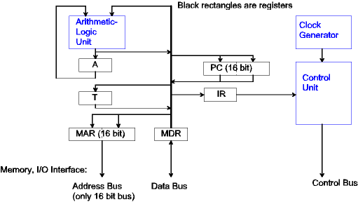
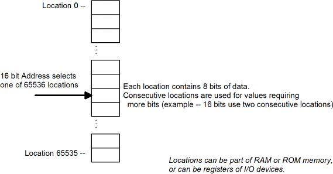
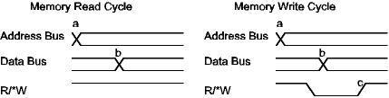

| Previous Section | Next Section | Index | Questions | Search the Text |
This section is split among several pages because of its length. The start of split sections have a table of contents showing each page and the contents of the current page. The current page is emphasized in bold.
In this section we will look at the operation of a simple Central Processing Unit, or CPU. The CPU has the following components:
For the purposes of introduction, we will use the following simple CPU:

The Memory and I/O interface consists of three busses:
The concept of an address makes it possible to select the exact byte of data to access. With a 16 bit bus, 65,536 different addresses exist. Since in the case of a microcontroller byte addressing is used, each address corresponds to a byte, and thus up to 65,536 bytes of memory can be accessed.

In a simple system, memory is connected such that the address specified on the address bus is always being read as long as the R/*W control line is high. The CPU sends out a new address at time a and expects the new data to be available on the data bus at time b. This is called the access time. To write to memory, the CPU again sends out the address, but it lowers the R/*W control line. Then it drives the data bus which is no longer being driven by memory because R/*W is low. The processor then raises the R/*W line at time c, which is used to latch the data into the memory.

In more sophisticated systems, the data and address bus can be time multiplexed to save pins, the data bus may be wider to increase the memory data transfer bandwidth, or clock signals may be provided to signal a read operation. These changes require additional control lines. Examples will be given later in the course.
The ALU performs operations on one or two operands under the control of the control unit. Typically one operand is the accumulator register (A), and the other operand can come from numerous different registers, the data supplied over an internal bus. The result typically is stored back into the accumulator. Common operations include:
The registers are the following:
Register loading is under the control of the control unit. Data is transferred between registers over internal busses, again under control of the control unit. In an 8 bit microcontroller, the internal busses are typically 8 bits wide. Data transferred between 16 bit registers is performed 8 bits at a time. A 16 bit microcontroller has 16 bit data paths so that no additional time is necessary to transfer between 16 bit registers.
The control unit controls the operation of the entire CPU. It does this by executing CPU instructions which are stored in memory. These sequences of instructions are called a program. Each instruction tells the CPU to perform a single operation, such as an addition. When an instruction is executed, the control unit obtains the next instruction from the following location in memory. The location of the next instruction byte is held in the Program Counter (PC) register. While the PC register is normally incremented to go from one instruction to the next, certain instructions, most notably the branch instructions, load new values into the PC register to specify a specific location for the next instruction.
Instructions are one or more bytes long. The first byte, called the operation code or opcode, indicates what operation is to be performed and how many bytes are in the instruction. The remaining bytes are called operands which are constant values necessary for instruction execution, such as specific memory locations to use to fetch data.
Instruction execution consists of three phases:
Faster CPUs will often overlap the execution of one instruction with the fetch of the next. This can often be confusing for studying the operation of a processor, however most of the time these implementation considerations can be ignored.
Continue with CPU Demonstration.
Return to the Index.